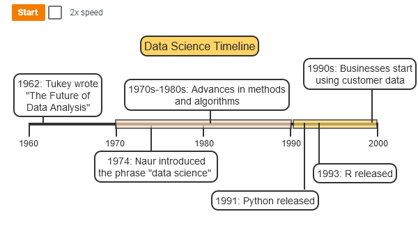
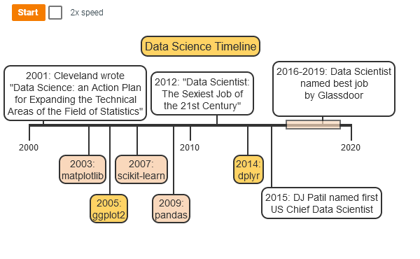
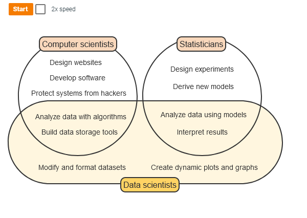
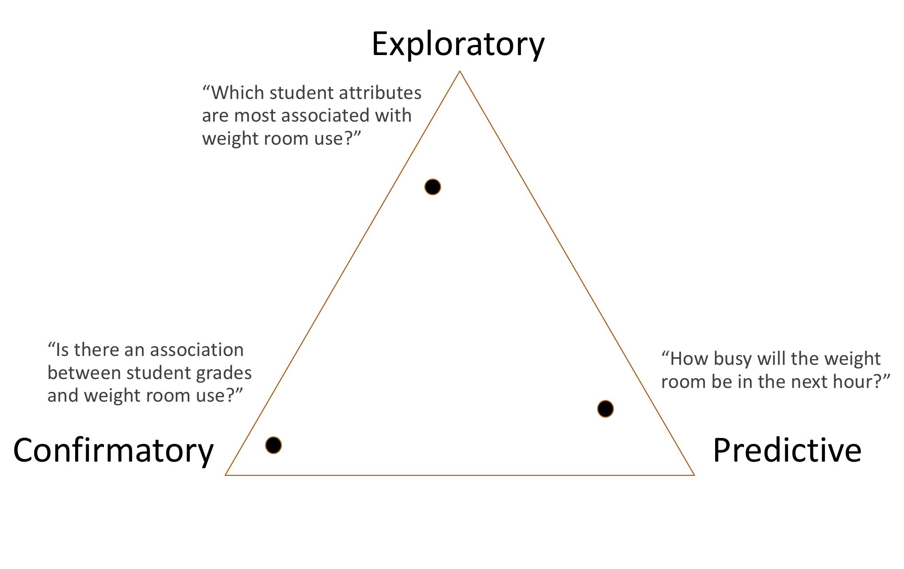
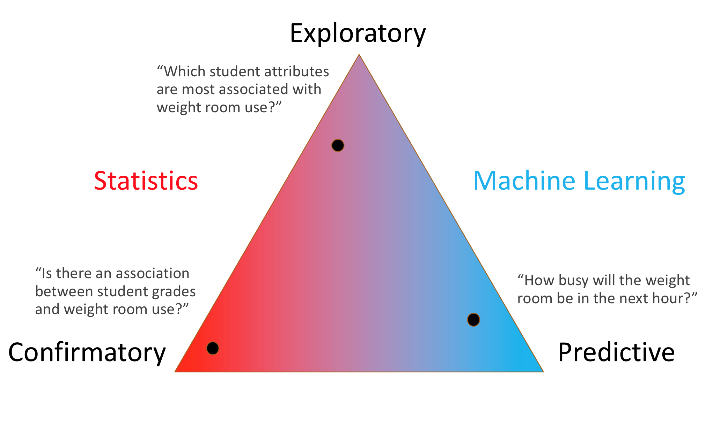
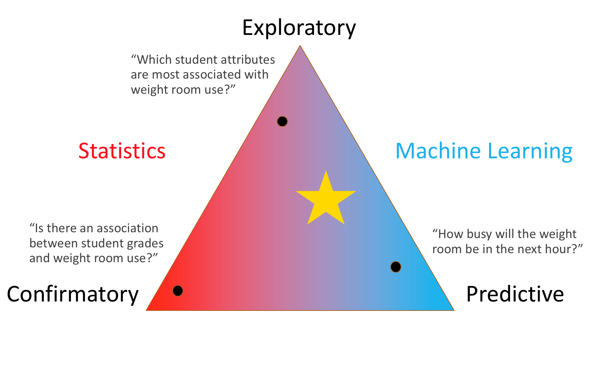
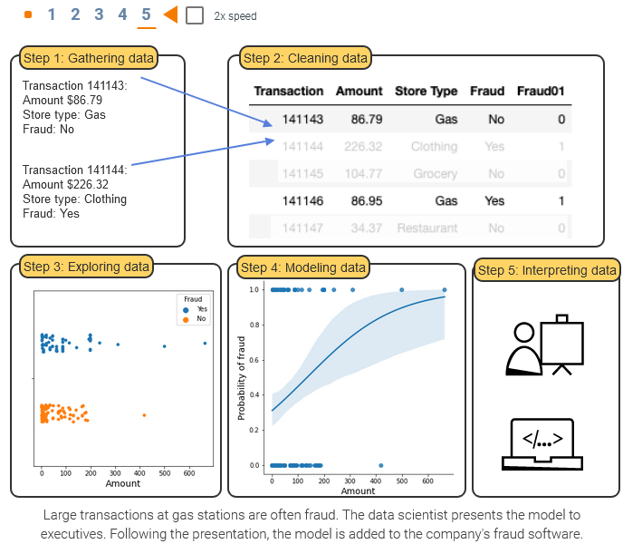
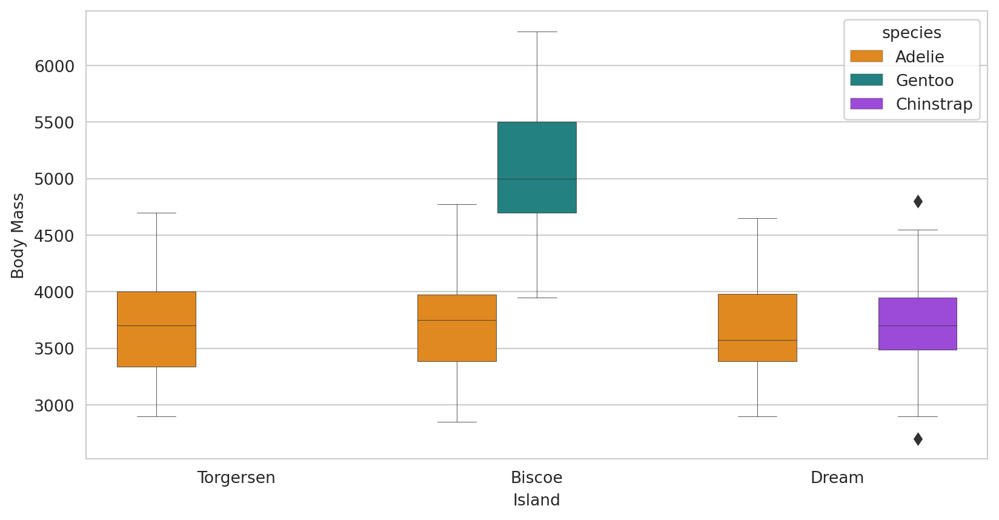

| species | island | bill_length_mm | bill_depth_mm | flipper_length_mm | body_mass_g | sex | year | |
|---|---|---|---|---|---|---|---|---|
| 0 | Adelie | Torgersen | 39.1 | 18.7 | 181.0 | 3750.0 | male | 2007 |
| 1 | Adelie | Torgersen | 39.5 | 17.4 | 186.0 | 3800.0 | female | 2007 |
| 2 | Adelie | Torgersen | 40.3 | 18.0 | 195.0 | 3250.0 | female | 2007 |
| 3 | Adelie | Torgersen | NaN | NaN | NaN | NaN | NaN | 2007 |
| 4 | Adelie | Torgersen | 36.7 | 19.3 | 193.0 | 3450.0 | female | 2007 |
CISC482 - Lecture02
What is Data Science?
Dr. Jeremy Castagno
Historical Overview
Data Science
Data science is an interdisciplinary field focused on discovering patterns and describing relationships using data.
- Data science uses techniques from computer science and statistics.
- Data scientists use computers to write code and store, modify, and visualize large datasets.
- Data scientists also build, test, and interpret models that describe real-life situations, then use models to make predictions for new data.
DS early history
DS 20th Century
- Peter Naur won the Turing Award
- Astronomer -> Computer Science -> Professor
- Inventor of Algol Programming Language (PL)
Statistics and Computer Science
Focus of Task
Statistics and Machine Learning
Where are we?
- Equal Exploratory and Predictive
- Little bit of statistics
Foundations of Data Science
Learning Goals
- Identify features and instances in a dataset
- Three V’s- volume, velocity, and variety
Data sets
- A dataset is a collection of information. Consists of features and instances
- A feature, or variable, is a characteristic that can be measured or observed on an observational unit.
- An instance, or observational units, is a tuple of features. Often called data points or observations.
Example Data Set
- ROW is an instance.
- COLUMN represents a different feature.
Volume, Variety, Velocity
- Volume - The amount of data being collected digitally is exponentially increasing.
- Billions of people are being digitally indexed and catalogued
- Estimate that 2.5 quintillion bytes of data is created each day
- We now have the processing power where large data sets can now be processed
Volume, Variety, Velocity
- Variety - Data from a variety of difference sources are being collected and combined
- Its not just your name and your playlist.
- Its how long you listened
- How long it took you swipe next
- Your search history on the subject
- Your bloody e-mails
- Your phones resolution, battery information, browser, time zone
Volume, Variety, Velocity
- Velocity - Data is being created and ingested at a faster time
- The search you just made was fed into an algorithm to give you an add within 10 seconds
- Sensor Data - Your recorded heart rate was just noted and used to indicate the statistical likelihood of sending you an add now or later
- With more up to date information, data scientist can make better predictions
Reproducibility
- Two data scientists are building models to classify brain tumors as benign or malignant.
- One data scientist uses a programming language, such as Python, to write code to fit the model.
- Another data scientist uses software instead of coding to fit the model.
- New brain scans arrive. The data scientist who used coding re-runs the analysis -> a few minutes.
- Since the software uses a point and click interface, re-analyzing could take several hours.
Data Science as Career
Job Titles
| Title | Description |
|---|---|
| Data engineers | Data engineers specialize in data gathering and storage. Data engineers extract, transform, and load datasets for later analysis. |
| Data scientists | Data scientists gather data, transform data, and use models and algorithms to extract meaningful insights from datasets. |
| Data analysts | Data analysts work with industry experts to analyze datasets and create visualizations. Data analysts use some data science models, but tend to use data visualization and summary more than modeling. |
| Business intelligence analysts | Business intelligence analysts specialize in data related to financial and market transactions. Data analysts and business intelligence analysts are similar roles, but the term business intelligence is more common in business and finance. |
| Machine learning engineers | Machine learning engineers specialize in machine learning models instead of statistical models. Machine learning engineers often focus on the implementation and development of a model rather than selection and interpretation. |
5 Steps of Data Science
Your new life
| Step | Description |
|---|---|
| Step 1: Gathering data | Identify available and relevant data; gather new data if needed. |
| Step 2: Cleaning data | Reformat datasets, create new features, and address missing values. |
| Step 3: Exploring data | Create data visualizations and calculate summary statistics to explore potential relationships in the dataset. |
| Step 4: Modeling data | Use modeling skills and content knowledge to fit and evaluate models, measure relationships, and make predictions. |
| Step 5: Interpreting data | Describe and interpret conclusions from data through written reports and presentations. |
Visualizing the 5 Steps
Gathering Data
Getting a dataset is easier then ever
- Kaggle Datasets
- World Health Organization
- The National Bureau of Economic Research
- International Monetary Fund
- General Social Survey
- United Nations Data
- United Nations Statistics Division
- U.K. Data
- U.S. Data
- U.S. Census Data
- European Statistics
- Statistics Canada
- Pew Research
- UNICEF
- CDC
- World Bank
- Election Studies
Example Dataset - Palmer Penguins
- The Palmer penguins dataset by Allison Horst, Alison Hill, and Kristen Gorman

Cleaning Data - Before
| studyName | Sample Number | Species | Region | Island | Stage | Individual ID | Clutch Completion | Date Egg | Culmen Length (mm) | Culmen Depth (mm) | Flipper Length (mm) | Body Mass (g) | Sex | Delta 15 N (o/oo) | Delta 13 C (o/oo) | Comments | |
|---|---|---|---|---|---|---|---|---|---|---|---|---|---|---|---|---|---|
| 0 | PAL0708 | 1 | Adelie Penguin (Pygoscelis adeliae) | Anvers | Torgersen | Adult, 1 Egg Stage | N1A1 | Yes | 2007-11-11 | 39.1 | 18.7 | 181.0 | 3750.0 | MALE | NaN | NaN | Not enough blood for isotopes. |
| 1 | PAL0708 | 2 | Adelie Penguin (Pygoscelis adeliae) | Anvers | Torgersen | Adult, 1 Egg Stage | N1A2 | Yes | 2007-11-11 | 39.5 | 17.4 | 186.0 | 3800.0 | FEMALE | 8.94956 | -24.69454 | NaN |
| 2 | PAL0708 | 3 | Adelie Penguin (Pygoscelis adeliae) | Anvers | Torgersen | Adult, 1 Egg Stage | N2A1 | Yes | 2007-11-16 | 40.3 | 18.0 | 195.0 | 3250.0 | FEMALE | 8.36821 | -25.33302 | NaN |
| 3 | PAL0708 | 4 | Adelie Penguin (Pygoscelis adeliae) | Anvers | Torgersen | Adult, 1 Egg Stage | N2A2 | Yes | 2007-11-16 | NaN | NaN | NaN | NaN | NaN | NaN | NaN | Adult not sampled. |
| 4 | PAL0708 | 5 | Adelie Penguin (Pygoscelis adeliae) | Anvers | Torgersen | Adult, 1 Egg Stage | N3A1 | Yes | 2007-11-16 | 36.7 | 19.3 | 193.0 | 3450.0 | FEMALE | 8.76651 | -25.32426 | NaN |
Cleaning Data - After
| species | island | bill_length_mm | bill_depth_mm | flipper_length_mm | body_mass_g | sex | year | |
|---|---|---|---|---|---|---|---|---|
| 0 | Adelie | Torgersen | 39.1 | 18.7 | 181.0 | 3750.0 | male | 2007 |
| 1 | Adelie | Torgersen | 39.5 | 17.4 | 186.0 | 3800.0 | female | 2007 |
| 2 | Adelie | Torgersen | 40.3 | 18.0 | 195.0 | 3250.0 | female | 2007 |
| 3 | Adelie | Torgersen | NaN | NaN | NaN | NaN | NaN | 2007 |
| 4 | Adelie | Torgersen | 36.7 | 19.3 | 193.0 | 3450.0 | female | 2007 |
Exploring Data

Modelling Data
Interpreting Data
- There is a linear relationship between flipper length and body length
- Gentoo penguins have significantly higher body length and body mass then Adelie or Chinstrap.
- etc.
Conclusion
Big Takeaways
- What is data science relationship with Statistics? Computer Science?
- Three V’s
- Five steps of data science
This week’s tasks
- Sign up for the Zybook
- Read the syllabus
- HW1 - Markdown